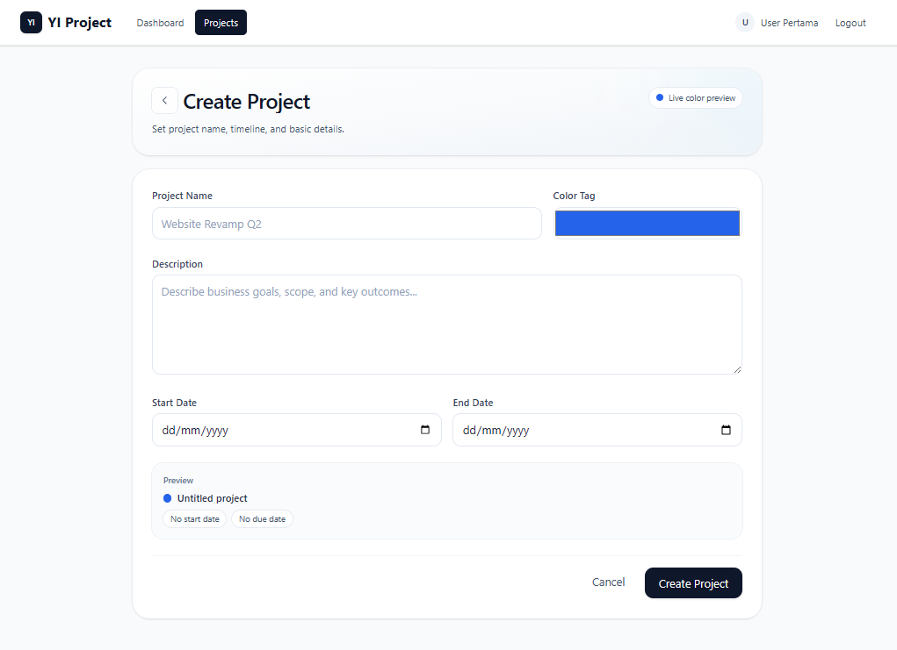
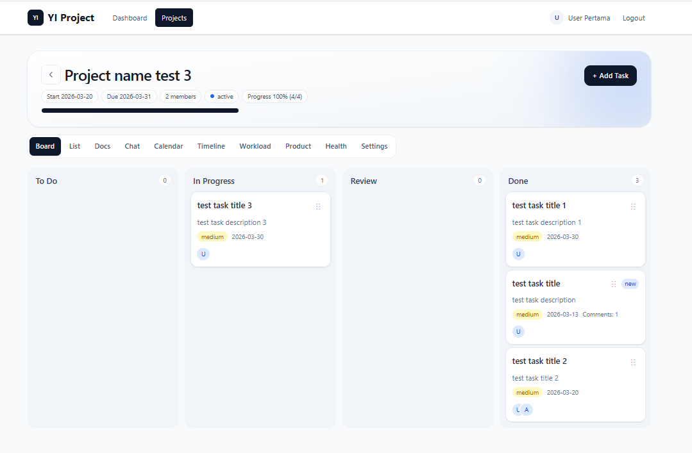
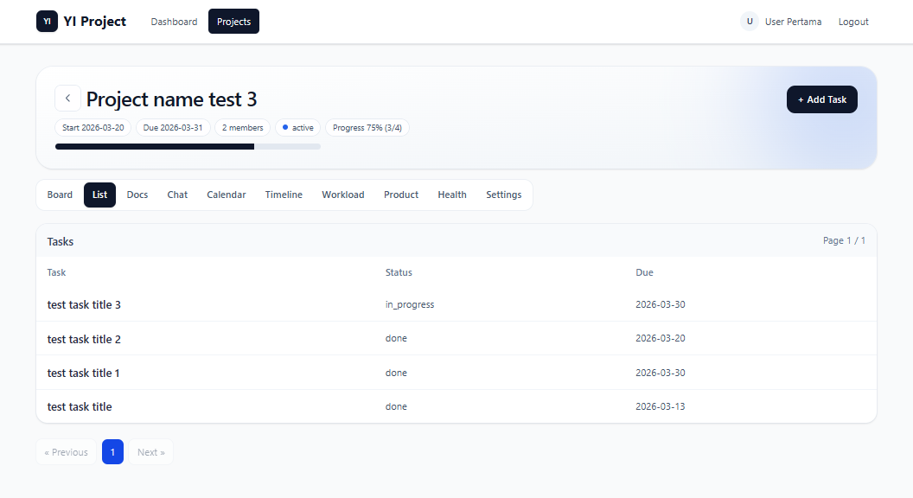
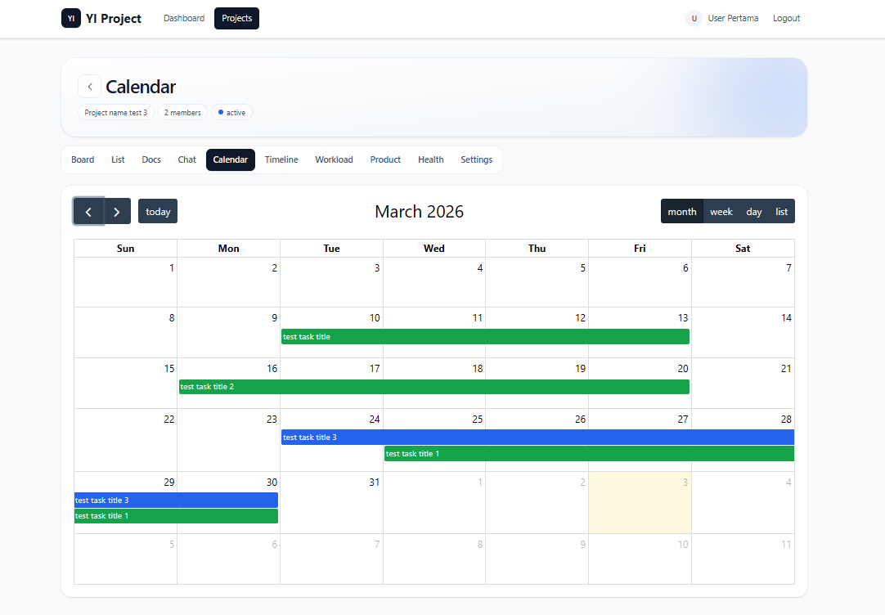
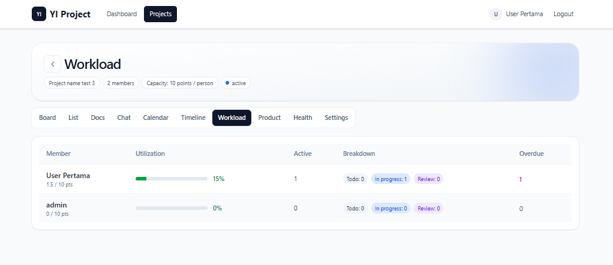

Intro
Aplikasi manajemen proyek modern berbasis web yang dibangun dengan Laravel dan React. Sistem ini menyediakan fitur lengkap untuk mengelola proyek tim, task management, roadmap planning, sprint management, dan monitoring kesehatan proyek secara real-time. Beberapa fitur diantaranya:
-
Dashboard & Monitoring
- Project Health Dashboard: Monitor kesehatan proyek secara real-time dengan indikator risiko, workload tim, dan progress roadmap.
- Sprint Metrics: Tracking performa sprint dengan burndown chart dan velocity metrics.
- Risk Indicators: Identifikasi risiko proyek (overdue tasks, blocked tasks, dll.)
- Team Workload Overview: Distribusi workload anggota tim.
- Roadmap vs Execution: Perbandingan progress roadmap dengan eksekusi aktual.
- Quality Metrics: Tracking kualitas dengan bug rates dan completion rates.
-
Task Management
- Multiple Assignees: Assign multiple user ke satu task.
- Checklist Items: Breakdown task menjadi checklist yang bisa dicentan.
- Custom Fields: Tambahkan field custom per proyek (text, number, select, date).
- Task Dependencies: Set dependensi antar task
- Time Tracking: Track waktu yang dihabiskan untuk setiap task.
- File Attachments: Upload dan manage file attachments dengan annotations.






Instalasi App
Berikut langkah-langkah untuk menginstal aplikasi ini dari GitHub:
-
Klon Repositori
git clone <repository-url>
cd Project-App -
Instal Dependensi PHP
Gunakan Composer untuk menginstal dependensi backend:
composer install -
Instal Dependensi JavaScript
Gunakan npm atau yarn:
npm installatauyarn install -
Konfigurasi Aplikasi
-
File Environment: Salin file contoh untuk membuat
konfigurasi lokal.
cp .env.example .env -
Generate App Key:
php artisan key:generate -
Konfigurasi Database: Buka file
.envdan perbarui pengaturan database sesuai pengaturan lokal Anda:
DB_CONNECTION=mysql
DB_HOST=127.0.0.1
DB_PORT=3306
DB_DATABASE=project_app
DB_USERNAME=root
DB_PASSWORD=
Catatan: Pastikan Anda telah membuat database (contoh: Recruitment_db) di server MySQL Anda sebelum melanjutkan.
-
File Environment: Salin file contoh untuk membuat
konfigurasi lokal.
-
Pengaturan Database
Jalankan migrasi dan seeder untuk menyiapkan struktur database dan data awal (termasuk pengguna admin, kategori, dan peran/roles):
php artisan migrate --seed
Atau jalankan secara terpisah:
php artisan migratedanphp artisan db:seed -
Konfigurasi Email & Antrean (Queue)
Aplikasi ini menggunakan Laravel Queues untuk mengirim email secara asinkron.-
Konfigurasi Mail Driver: Di file
.env, atur kredensial server email Anda. Untuk pengembangan lokal, gunakan Mailtrap:
MAIL_MAILER=smtp
MAIL_HOST=sandbox.smtp.mailtrap.io
MAIL_PORT=2525
MAIL_USERNAME=username_anda
MAIL_PASSWORD=password_anda
MAIL_ENCRYPTION=tls -
Konfigurasi Queue Driver: Setel koneksi antrean ke
database:
QUEUE_CONNECTION=database
-
Konfigurasi Mail Driver: Di file
-
Pengaturan Penyimpanan File
Buat tautan simbolis agar file yang diunggah dapat diakses melalui web:
php artisan storage:link -
Menjalankan Aplikasi
Buka dua terminal terpisah:-
Terminal 1 (Backend):
php artisan serve
Aplikasi akan tersedia di http://127.0.0.1:8000 -
Terminal 2 (Frontend):
npm run devatauyarn dev
-
Terminal 1 (Backend):
-
Kredensial Default (Seeder)
Setelah menjalankan seeder, Anda dapat masuk menggunakan kredensial default yang ada. anda dapat merubah atau menambahkan pengguna baru melalui database atau fitur manajemen pengguna di aplikasi: -
Informasi Tambahan
-
Queue Worker: Jika notifikasi email aktif, jalankan
worker antrean untuk memproses tugas:
php artisan queue:work -
Production Build: Untuk membuild aset frontend untuk
peluncuran produksi:
npm run buildatauyarn build
-
Queue Worker: Jika notifikasi email aktif, jalankan
worker antrean untuk memproses tugas: